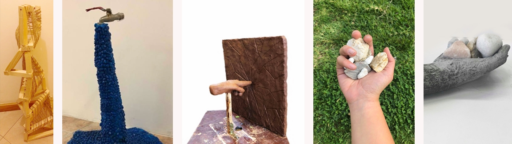

Escultura
A partir de um objeto natural comecei a tirar partido das suas formas para fazer a escultura. O conceito para o meu trabalho é o ADN e a formas que ele tem, que em, cada um pode ser diferente e também explorei o cheio e o vazio para que a sobra da prórpia escultura tivesse uma forma diferente.
O trabalho da Assenblade, tentei retratar os desperdícios de água que é um bem essecial. Com isto quis que a minha escultura tivesse um ar de estranheza e curiosidade, e que levasse o observador a questionar-se dos desperdícios que faz e não dá conta.
Para a escultura de barro comecei por inspirar num espelho partido e ao olhar para esse espelho, pensei na destruição que o homem pode fazer a sí prórpio mas também ao planeta. Etão os meus conceitos base foram o homem depresivo que se destói interiormente e a destruição que o homem faz ao planeta.
Falar com pedras nas mão era um trabalho que tinhamso de trabalhar o conceito da violência e o ditado "falar com 7 pedras na mão". O conceito da minha escultura era a violência que podemos receber verbalmente e retrateia atravéz de um cadeado bastante vizivel e uma chave que já não era tão vizivel, pois é bastante difíciçl sairmos de situações de violência.